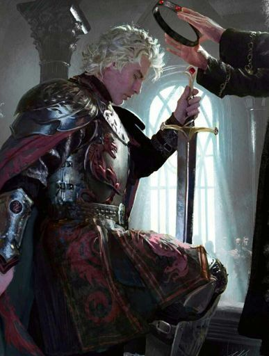

El rey Aegon I Targaryen, llamado Aegon el Conquistador, Aegon Lordragón y Aegon el Dragón, fue el conquistador de los Siete Reinos y fundador de la dinastía Targaryen que reinó en Poniente por casi 300 años. Fue jinete del dragón Balerion.

HERMANAS DE AEGON
HERMANAS DE AEGON
Visenya
La reina Visenya Targaryen fue la hija mayor de Lord Aerion Targaryen y Lady Valaena Velaryon. Tuvo una hermana menor, Rhaenys, y un hermano, Aegon, con quien se casó. Fue jinete del dragón Vhagar.
Rhaenys
Lord Aerion Targaryen y Lady Valaena Velaryon. Tuvo una hermana mayor, Visenya, y un hermano, Aegon, con quien se casó. Fue jinete del dragón Meraxes